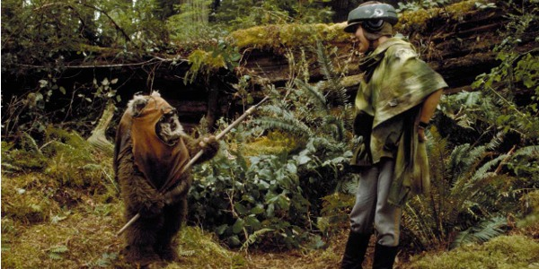

Cultural Differences

A theme continually seen throughout both Star Wars and, in the movies, viewed this year is the idea of cultural differences. Cultural differences take a hold in many forms, whether it be within the senate, and the different ideas and beliefs held between representatives, or outside of the political spectrum, we also see it in basic interactions on Endor, and the conflicts that arise from their cultural differences.
The first differences of culture is seen throughout the republic senate. This senate consists of representatives from planets and systems all across the galaxy, who align themselves with the republic. Due to the large number of nations and cultures being represented within the senate, it is obvious that there will be cultural differences present. These differences however are emphasized by the numerous scenes filled with the interactions of the leaders.
For example, Episode I: The Phantom Menace, Jar Jar Binks, a Gungan representative from Naboo is heavily involved in the plot, and his cultural beliefs proceeds to cause many problems. Due to Jar Jar being a Gungan, he and his culture are unfamiliar with battle, and live in hidden seclusion on the plant of Naboo. So when he is tasked with accompanying the Jedi Masters into a battle zone, his unfamiliarity creates danger for the people he is supposed to be assisting. Along with the danger caused by Jar Jar, it also results in disrespect shown towards Jar Jar.
When the first sign of conflict arises, Jedi Master Qui-Gon Jin is instructing Jar Jar to flee the battle, yet instead, Binks grabs a hold of the Jedi Master resulting in both of them getting caught under an enemy machine. This cultural difference is very obvious to see in the course of the movie, but when analyzed further this cultural difference can be applied to the real world. This character is often seen as a racist stereotype of the African American Culture. Between the voice of a black actor, the floppy ears resembling dread locks, and the clumsy portrayal of his actions, this can be seen as a social commentary of the real world. While surrounded by primarily white characters, the cultural difference is Star Wars speaks that white viewers watch the movie to feel a sense of superiority, and the cultural differences shown through the character of Jar Jar Binks is a prime example of this.
Another example of cultural differences can be seen in Episode VI: Return of the Jedi, when our main characters travel to the forested planet of Endor and encounter the local population of Ewoks, a small species resembling a bipedal bear. When first introduced to the Ewok tribe, the humans are taken hostage and tied up, while their protocol droid C-3PO, is anointed as the new leader of the Ewoks. Within the culture of the humans, C-3PO is viewed as the lowest of the low, and an easily replaceable asset. When entering a new culture however, the difference of their cultures is emphasized, as the protocol droid becomes the savior of his friends.
Of the movies we viewed in class this year, the difference is culture shown from the Ewoks and the humans most closely resembles that shown in Planet of the Apes. Similar in both, there consists of a human race and an intelligent animal like race, who compete in a struggle for power. This struggle centers around pre-conceived notions regarding the other race, based on what their culture believes. Cultural differences seen in movies are important to acknowledge, as they have applications to other movies, other studies, and ultimately, to our own lives. When we are able to understand these themes in movies, it allows us to strengthen our mind, and become more understanding towards other cultures, without compromising our own.